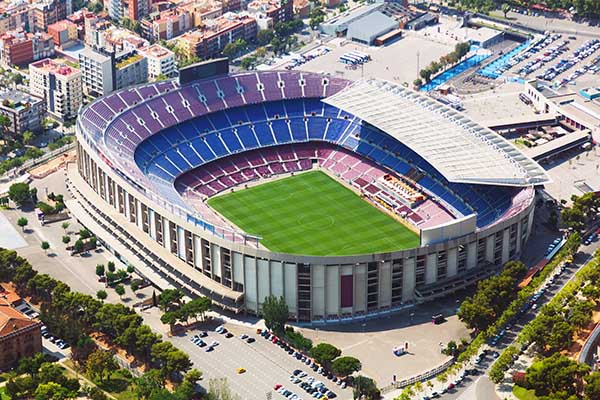
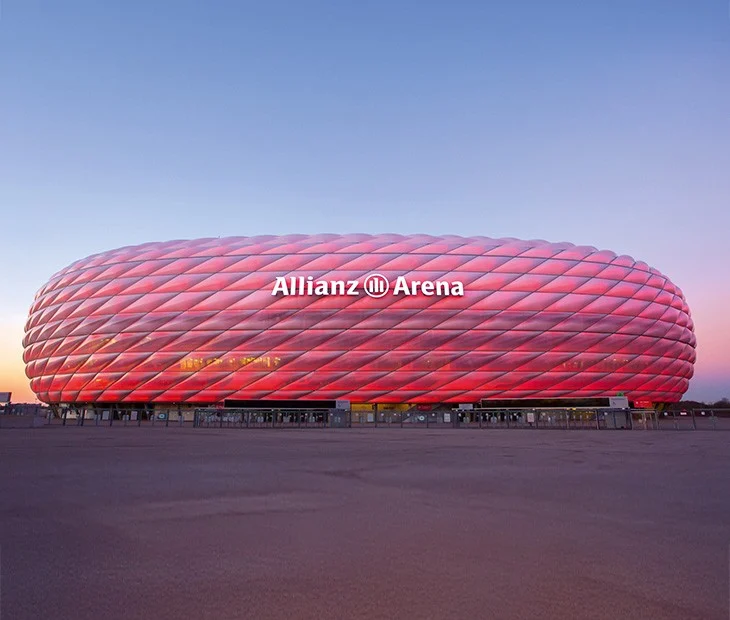
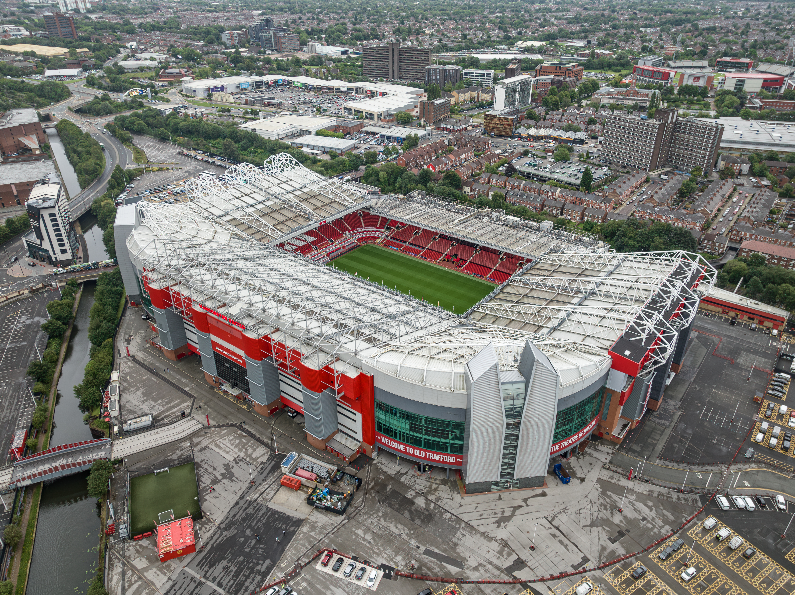
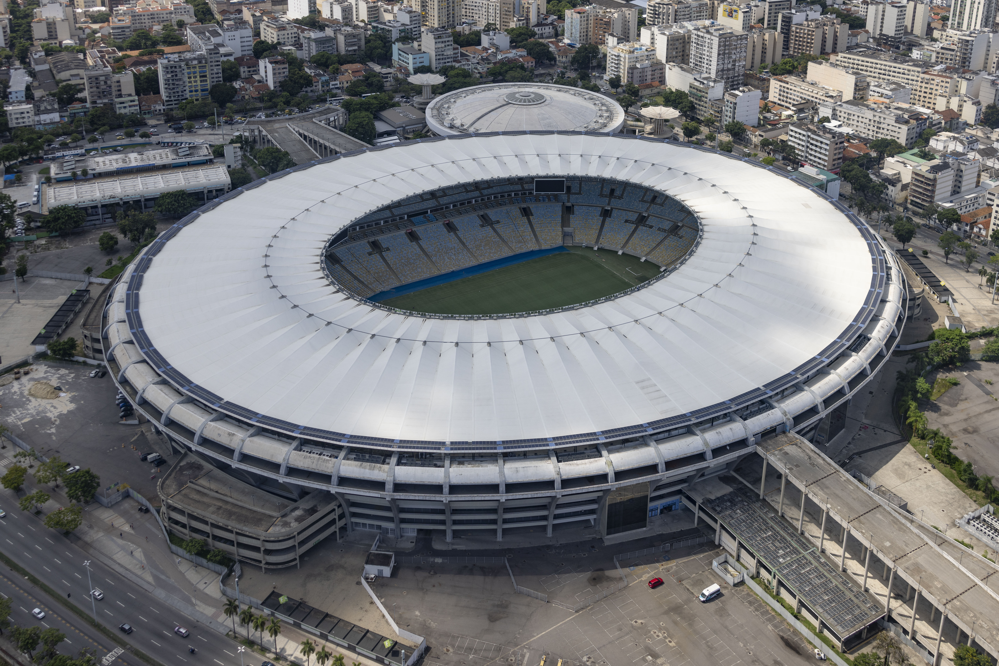

About The Champions League

The UEFA Champions League is one of the most popular football competitions in the world. It brings together the strongest football clubs from different European countries. Every year, millions of people watch the competition and support their favorite teams. The main goal for every club is to win the famous Champions League trophy. Real Madrid, Barcelona, Bayern Munich, Liverpool, Manchester City, and AC Milan are some of the biggest clubs in European football. The Champions League is known for its exciting matches and unforgettable moments. Players from all over the world dream of playing in this competition. Every match is important because one mistake can change the result of the game. The atmosphere inside the stadiums is incredible, with thousands of fans cheering for their teams. The Champions League anthem is famous and recognized by football fans everywhere. Teams must work hard and play together to achieve success. Great players use their skills, speed, and intelligence to help their clubs win. The competition has a long history filled with legendary players and unforgettable matches. Real Madrid has won the most Champions League titles. Every season, new teams try to prove that they deserve to be champions. The knockout matches are often full of drama and excitement. Some games are decided by a single goal, while others go into extra time or penalties. The Champions League final is one of the biggest events in world football. The famous trophy represents success, passion, teamwork, and excellence. The UEFA Champions League continues to inspire young generations of football players and supporters. It remains one of the greatest competitions in the history of sport.
Champions League Legends
The greatest players who have made history in European football.
Greatest Goalscorers
Cristiano Ronaldo is the all-time leading goalscorer in UEFA Champions League history, with 140 goals. Lionel Messi follows him with 129 goals. Other legendary goalscorers include Robert Lewandowski, Karim Benzema and Raúl. These players have amazed football fans with their incredible finishing, talent and consistency.
Most Champions League Titles
Francisco Gento was one of the first great legends of European football, winning six European Cups with Real Madrid. In the modern era, players such as Cristiano Ronaldo, Karim Benzema, Luka Modrić, Toni Kroos and Dani Carvajal have also won five Champions League titles. Their achievements show how important teamwork and experience are.
Champions League Golden Boots
Cristiano Ronaldo holds the record for winning the most Champions League top-scorer awards. He has finished as the competition's top scorer seven times. Lionel Messi has achieved this honour six times. Their incredible performances have made them two of the greatest attacking players in football history.
Legendary Achievements
Many players have created unforgettable moments in the Champions League. Cristiano Ronaldo is famous for his spectacular goals and performances in important matches. Lionel Messi has amazed the world with his dribbling and goal-scoring ability. Iker Casillas, Paolo Maldini, Andrés Iniesta and Zinedine Zidane are also remembered for their incredible contributions to European football. These legends have helped make the Champions League one of the most exciting competitions in the world.
Champions League Records
Incredible records and achievements that have made football history.
Most Goals
Cristiano Ronaldo holds the record for the most goals in Champions League history.
Most Appearances
Cristiano Ronaldo holds the record for the most Champions League appearances.
Most Top Scorer Awards
Cristiano Ronaldo has finished as the Champions League's top scorer seven times.
Most Titles as a Player
Francisco Gento won six European Cups with Real Madrid.
Most Goals in One Season
Cristiano Ronaldo scored 17 goals during the 2013–14 Champions League season.
Fastest Final Goal
Paolo Maldini scored after just 50 seconds in the 2005 Champions League final.
Top 10 Best Football Stadiums
Discover some of the most beautiful and legendary football stadiums in the world.

Santiago Bernabéu
Madrid, Spain
Home of Real Madrid, famous for its history, atmosphere and modern design.

Spotify Camp Nou
Barcelona, Spain
The legendary home of FC Barcelona, known for its incredible football history.

Wembley Stadium
London, England
One of the most famous stadiums in the world, hosting historic finals.

Allianz Arena
Munich, Germany
Home of Bayern Munich, famous for its spectacular illuminated exterior.

San Siro
Milan, Italy
A historic football stadium shared by AC Milan and Inter Milan.

Anfield
Liverpool, England
Famous for its passionate supporters and the unforgettable You'll Never Walk Alone atmosphere.

Signal Iduna Park
Dortmund, Germany
Known for the Yellow Wall, one of the most impressive fan sections in football.

Old Trafford
Manchester, England
The historic home of Manchester United, known as the Theatre of Dreams.

Parc des Princes
Paris, France
Home of Paris Saint-Germain, famous for its passionate atmosphere.

Maracanã Stadium
Rio de Janeiro, Brazil
A legendary football stadium that has hosted some of the biggest matches in football history.
Most Successful Clubs
The clubs with the most European Cup and Champions League titles.
Real Madrid
15 Titles
AC Milan
7 Titles
Liverpool
6 Titles
Bayern Munich
6 Titles
Barcelona
5 Titles
The Legendary Trophy

More than just a trophy. It represents dreams, dedication, history, and greatness.